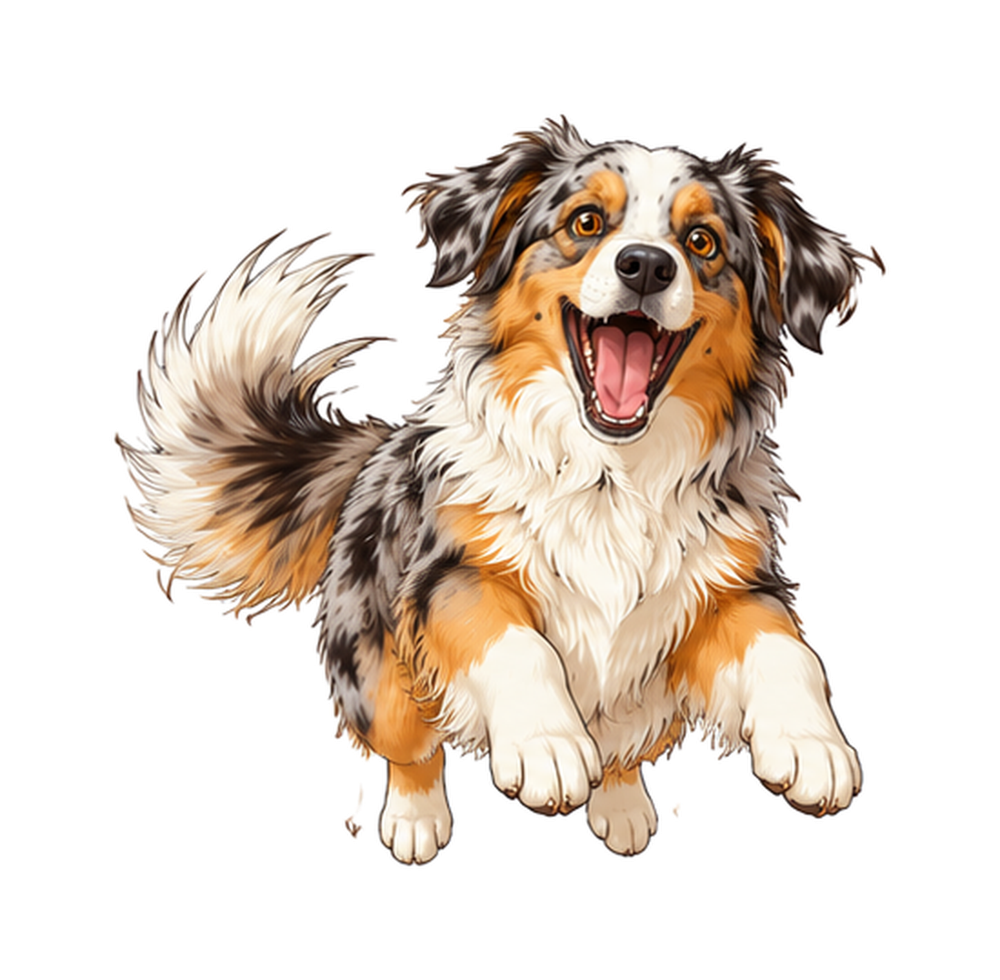

Körpersprache
Was sein Schwanz dir verrät.
Studie: Universität Bari, Italien (2007)
wedelt dein hund mit dem schwanz?
wedelt er eher nach rechts: freude
eher nach links: unsicherheit
das zeigte eine studie aus italien
achte mal darauf!
Folgen für mehr Hundewissen

HundeWissenTv
